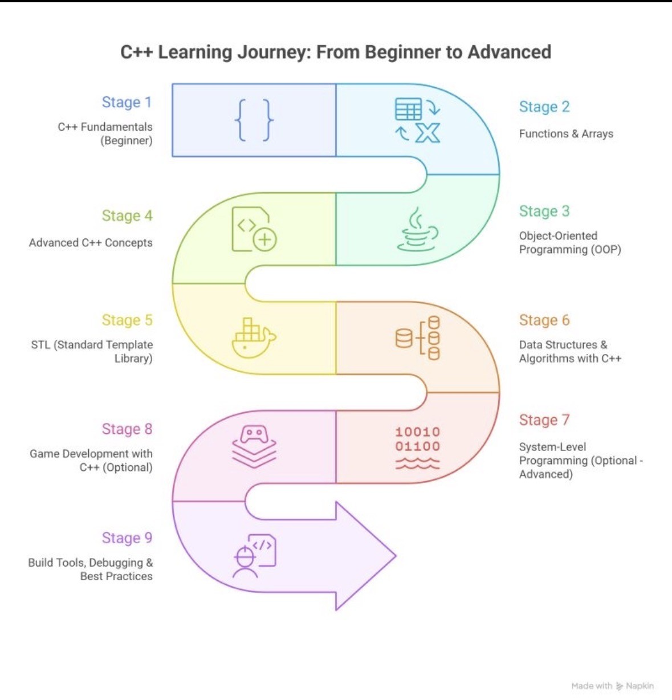

What this site covers
This site is a beginner-friendly overview of some core topics in software development: common programming languages, the basics of web development, and how databases store and manage data.
- Programming Languages — what they are and why they matter
- Web Development — front-end vs. back-end basics
- Databases — tables, queries, and how data is organized
Ready to keep going? Start with Programming Languages
Beginner tip
If you’re new, focus on understanding the “why” first. You don’t need to memorize everything — just learn the purpose of each tool and concept.
